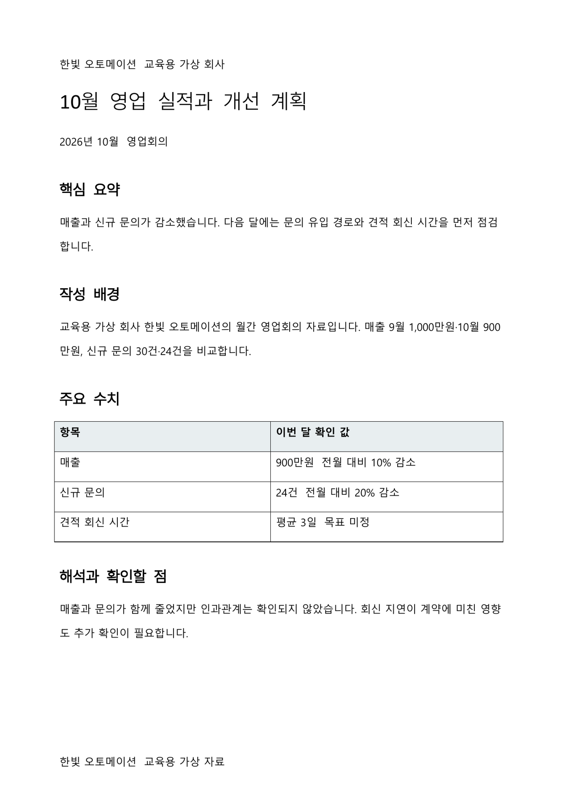
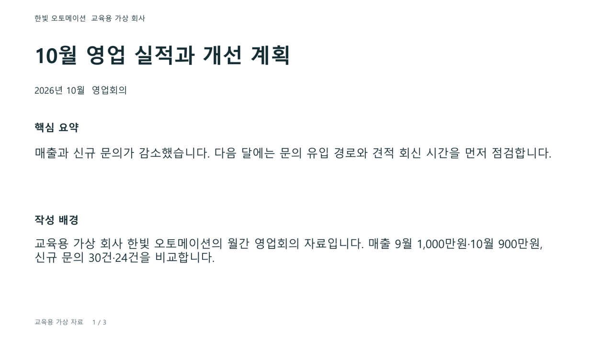

자료와 요지를 말하면,
우리 회사 형식의 파일이 나옵니다.
회사에서 쓰는 편집 가능한 DOCX·PPTX 양식을 가져오세요. 둘 다 있으면 함께 준비해도 좋고, 실습은 하나를 선택합니다. 누가, 누구에게, 왜 쓰는 문서인지 간단히 메모하면 더 좋습니다. 양식이 없으면 아래 샘플로 참여할 수 있습니다. 준비물과 예시 파일 확인 ↓
다음 달 영업회의를 준비합니다. 회사 양식과 규칙이 있는 폴더를 선택하고 새 실적 자료를 넣습니다. “이번에는 문의가 줄어든 원인과 대응을 중심으로 정리해 주세요”라고 말합니다. 구성안을 확인하면 약속한 위치·글꼴·크기에 맞춘 파일이 저장됩니다. 파일을 열어 숫자와 표현을 확인합니다.
그다음에는 이 방법을 스킬로 묶습니다. 다른 프로젝트에서도 불러 쓰고, 직원은 스킬을 선택해 자료를 넣고 질문에 답하면서 같은 기준의 문서를 만듭니다.


1차 · 내 프로젝트에서 성공
양식을 정리하고 새 자료로 실제 파일을 만듭니다.
2차 · 다른 폴더에서 재사용
성공한 절차를 스킬로 묶어 다른 프로젝트에서 호출합니다.
3차 · 직원에게 공유
ChatGPT Work에서 쓰는 설치·사용 가이드를 만들고 직원 계정으로 시험합니다.
수정 예정 초안 · 2026.11.04. 예시 파일 생성과 화면은 확인했습니다. 임의의 회사 양식 적용, 새 대화에서의 전체 실습, 직원 계정 설치·호출은 추가 테스트 후 보완합니다. 수업은 1차 목표를 먼저 완성하고, 2·3차 목표는 진행 상황에 따라 이어갑니다.
회사 양식과,
누가 왜 쓰는지 가져오세요.
| 준비할 것 | 이 정도면 충분합니다 |
|---|---|
| 회사 양식 | 보고서·제안서·회의자료·업무 안내 등 편집 가능한 DOCX 또는 PPTX. 빈 양식이나 기존 완성 문서의 사본도 괜찮습니다. 두 형식이 있으면 함께 가져오고 실습할 하나를 고릅니다. |
| 간단한 메모 · 권장 | 누가 작성하고, 누구에게 보여주며, 무엇을 판단·전달하려고 쓰는 문서인지 적습니다. |
| 내용 자료 · 있으면 | 새 문서에 넣을 숫자·보고서·회의 메모 등. 새 자료를 만들 필요는 없습니다. |
우리 회사의 영업 담당자가 매월 팀장에게 고객 문의 변화와 다음 달 대응을 설명하는 회의자료입니다.
메모는 위 예시처럼 한두 문장이면 됩니다. 유지해야 하는 로고·색·필수 항목, 조금 개선하고 싶은 부분이 있으면 함께 적어 오세요. 회사 자료는 교육에 사용할 수 있는 사본으로 준비하고, 개인정보·비공개 수치는 지우거나 가상 값으로 바꿉니다.
샘플은 위치·글꼴·크기·정렬·간격이 일부 불규칙한 상태입니다. 회사 양식으로 시작하거나, 샘플로 먼저 성공한 뒤 회사 양식으로 바꿔도 됩니다. 샘플에서 회사 이름만 바꾸는 것으로 끝내지 않고 실제 업무의 항목과 서식을 정합니다. 파일이 없거나 준비가 어려우면 수업에서 함께 시작합니다.
컴퓨터에 작업 폴더 하나를 만들고 자료를 담아 오세요. 폴더 이름과 파일 정리 방식은 자유입니다. 별도 사이트나 API 키를 만드는 준비는 필요하지 않습니다.
폴더를 선택하고,
첫 요청을 한 번 넣습니다.
Codex의 일반 대화에서 자료가 있는 폴더를 선택합니다. 아래 요청을 한 번 복사한 뒤, AI의 질문에 평소 말하듯 답합니다. 학습자가 코드를 작성할 필요는 없습니다.
이 폴더의 자료로 우리 회사 형식의 문서를 반복해서 만들고 싶습니다. 먼저 파일을 읽고 누가, 누구에게, 왜 쓰는 문서인지 파악해 주세요. DOCX 또는 PPTX 중 실습할 하나를 저와 정하고, 회사 양식이 없으면 제공 샘플로 시작하겠습니다. 자료를 읽고도 모르는 중요한 내용만 2~3개씩 질문해 주세요. 유지할 요소와 일부 개선할 요소를 나누고, 제목·본문·표의 위치, 글꼴, 크기, 정렬, 간격을 기준으로 양식 정리안을 제안해 주세요. 내용 구성 기준과 서식 기준은 구분하고 숫자와 사실은 원자료에서 확인해 주세요. 원본을 보존하면서 필요한 작업 폴더를 정리할 계획, 파일 생성·저장·검수 방법을 마련해 주세요. AGENTS.md에 작업 규칙을, PLAN.md에 목표·결정·순서·확인 기준을 남기고 제 확인을 기다려 주세요. 아직 양식 수정이나 파일 제작은 시작하지 마세요. 제가 계획을 확인하고 진행하라고 하면, 양식 사본 정리 → 새 자료의 구성안 확인 → 실제 파일 생성 → 내용과 배치 검수까지 이어가 주세요. 그다음 다른 자료로 두 번째 파일을 만들어 서식 유지와 새 내용 반영을 확인하겠습니다. 1차 목표가 성공한 후 절차를 스킬로 묶고, 다른 프로젝트에서 호출하고, 직원에게 공유하는 것은 후속 단계로 남겨 주세요.
내가 할 일: 문서의 용도를 설명하고, 형식과 개선 범위를 선택합니다. 계획이 맞으면 “이 계획대로 진행해 주세요”라고 말합니다. 질문이 엉뚱하거나 결과가 다르면 그 이유를 알려 줍니다.
원본, 정리된 양식, 새 자료, 결과 파일의 위치를 구분하고, 다음 대화에서도 읽을 수 있게 규칙과 현재 상태를 남깁니다. 학습자가 처음부터 폴더 구조를 설계할 필요는 없습니다.
“깔끔하게”를,
다시 적용할 기준으로 바꿉니다.
같은 역할의 제목·본문·표가 다른 모양이라면 먼저 통일합니다. 회사 로고·색·필수 항목은 유지할지 확인하고 일부 개선합니다. 회사에서 승인하기 전에는 회사 양식 초안입니다.
| 서식 기준 | 내용 구성 기준 |
|---|---|
| 제목·본문·표의 위치, 글꼴, 크기, 정렬, 간격 | 어떤 질문에 답하고 어떤 자료를 어느 항목에 넣을지 |
| DOCX: 용지·여백·문단 스타일·표 너비 PPTX: 화면 비율·좌표·텍스트 영역·레이아웃 | 받는 사람, 핵심 요지, 근거 수치, 해석, 다음 행동, 적정 분량 |
AI가 제안한 기준을 보고 수정 전후 파일을 직접 비교합니다. 기준은 FORMAT.md, 내용 구성 방법은 CONTENT.md처럼 따로 남길 수 있습니다. 파일 이름을 외우는 것보다 무엇을 지킬지 설명하고 실제 결과로 확인하는 것이 중요합니다.
넘칠 때: 글자를 무조건 줄이지 않고 요약하거나 페이지·슬라이드를 나누는 방법을 선택합니다. 회사 전용 글꼴이 없으면 대체 후보와 차이를 확인합니다. PDF·사진만 있으면 참고로 두고 편집 가능한 샘플로 시작할 수 있습니다.
한 번 만들고,
다른 자료로 다시 만듭니다.
“이 자료에서 강조할 점은 무엇이다”라고 설명합니다. AI가 제안한 구성안을 확인한 뒤 선택한 DOCX 또는 PPTX를 생성하게 합니다. 저장 경로를 받아 실제 파일을 열어 내용과 서식을 봅니다.
문제는 “2쪽 표의 마지막 열이 잘립니다. 표 너비 기준을 확인하고 새 버전으로 고쳐 주세요”처럼 위치와 기대 결과를 말합니다. 자료에 없는 원인·담당자·날짜를 만들어 넣지는 않았는지도 봅니다.
준비된 두 회차 예시와 작업 폴더 비교하기
10월과 11월의 가상 영업자료를 같은 양식에 담은 예시입니다. 준비한 내용을 채운 결과이며, 새 대화에서의 학습자 전체 실습 성공을 증명하지는 않습니다. 폴더 ZIP은 비교용 예시로, 설치 가능한 스킬 ZIP과 다릅니다.
성공한 방법을 묶고,
다른 프로젝트에서 호출합니다.
스킬에는 표준화한 양식, 작성 순서, 사용자에게 물을 질문, 필요한 파일, 검수 방법이 들어갑니다. 매번 달라지는 고객 정보·실적 자료는 새 프로젝트에서 받습니다. 스킬이 처음 프로젝트의 절대경로를 읽어야만 작동하면 다른 폴더에서 재사용하기 어렵습니다.
두 회차에서 확인한 문서 작성 방법을 재사용할 스킬로 만들어 주세요. skill-creator를 사용하고 이름은 company-document로 하겠습니다. 확인한 양식과 서식·내용 기준을 포함하고, 필요한 생성 도구는 기존 것을 재사용해 주세요. 누가 누구에게 왜 쓰는지, 선택 형식, 핵심 요지, 기준일과 필요한 자료를 확인하도록 설계해 주세요. 이미 자료에 있는 정보는 반복해서 묻지 마세요. 자료 검토 → 부족한 정보 질문 → 구성안 확인 → 양식 적용 → 파일 생성 → 내용·배치 검수 → 새 이름 저장 순서를 넣어 주세요. 표준 양식과 기준은 스킬 내부의 상대경로로 참조하고, 새 입력·결과는 현재 프로젝트 폴더를 사용해 주세요. 최초 작업 폴더의 절대경로에 의존하지 않게 해 주세요. 설치할 위치와 적용 범위를 설명한 뒤 사용자용 스킬로 등록해 주세요. 같은 이름이 있으면 덮어쓰기 전에 물어봐 주세요. 제가 다른 프로젝트 폴더의 새 대화에서 호출해 확인할 수 있도록 설치 위치, 표시 이름, 필요한 자료, 시험 방법을 알려 주세요. 직원 공유는 아직 하지 마세요.
데스크톱 앱에서 @를 입력해 목록의 스킬을 선택합니다. CLI·IDE에서는 $ 표기를 씁니다. 스킬이 보이지 않으면 설치 위치를 확인하고 앱과 새 대화를 다시 엽니다.
이제 다른 폴더에 새 자료만 넣고 새 대화를 시작합니다. 스킬을 선택하고 “이 자료로 다음 달 문서를 만들어 주세요. 핵심은 ○○입니다”라고 요청합니다. 원래 프로젝트의 파일을 따로 찾아주지 않아도 질문·구성·생성·검수가 이어지는지 확인합니다.
설치 위치와 스킬 안에 들어갈 것
공식 사용자용 스킬 위치는 ~/.agents/skills/company-document/입니다. 프로젝트 안에만 둔 스킬은 다른 프로젝트에서 자동으로 보이지 않을 수 있습니다. 실제 환경의 인식 위치를 확인합니다. SKILL.md는 진행 방법, assets는 양식, references는 서식·내용 기준, scripts는 꼭 필요한 생성 도구를 담을 수 있습니다. 규칙만 복사하고 양식·도구를 빼놓지 않습니다.
만든 것과 시험한 것을,
구분해서 남깁니다.
완료하지 못한 단계와 다음 시험을 PLAN.md에 남깁니다. 파일 생성만 확인했으면 배치 확인은 남은 일입니다. 패키지만 만들었으면 직원 사용 시험은 남은 일입니다. 수업에서 정리한 회사 양식은 내부 검토와 승인 후 업무에 적용합니다.